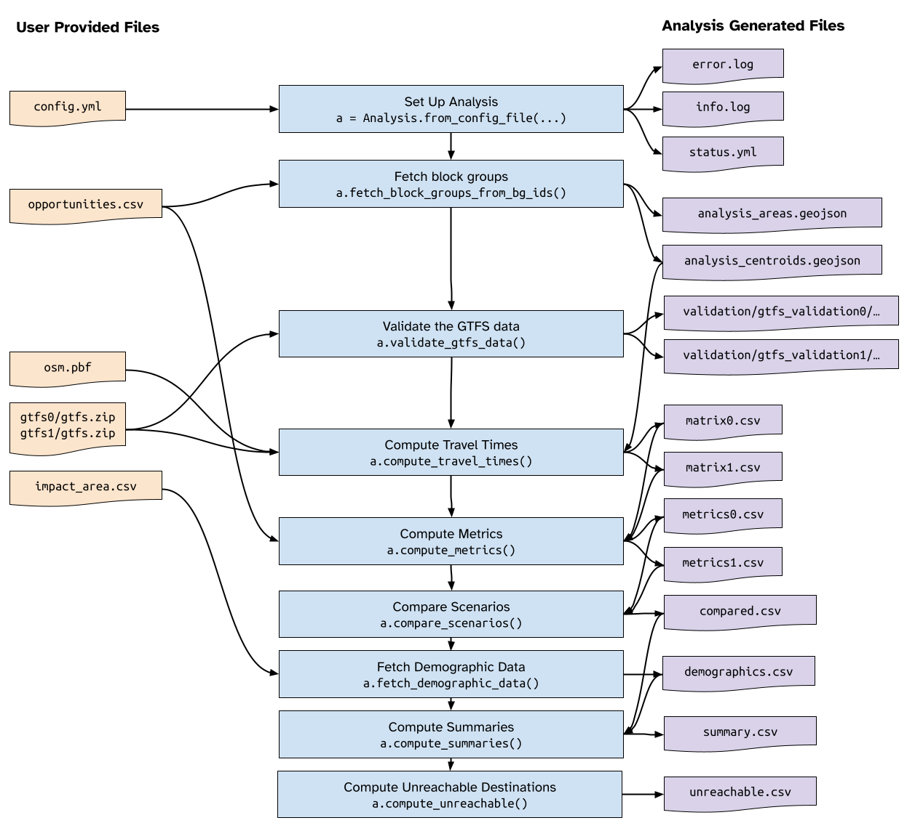
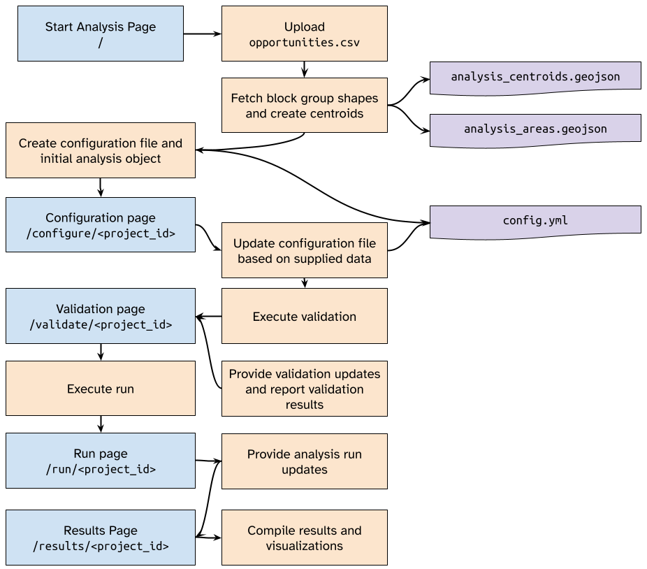

Developer Reference
This reference contains information about the design and code structure of TESCA. It is intended as a guide to help future development of the project.
There are two main sections to the code: The analysis engine (contained in tesca, primarly in tesca.Analysis) which contains a series of methods to set up and anlayze travel times and accessibility, and a web application which gathers inputs to generate configuration settings for the analysis, execute the analysis, and report on the output.
We discuss first the underlying analysis application, followed by a discussion of the design of the web tool.
Analysis Engine
Project Structure
Each individual project lives in a folder inside the cache folder, and is assigned an ID
based on the time of creation of the project. Here’s a rough example of the folder
structure before an analysis is run:
cache
├── 20230822141413
| ├── gtfs0
│ │ ├── cta.zip
│ │ └── metra.zip
│ ├── gtfs1
│ │ ├── cta.zip
│ │ └── metra.zip
| ├── validation
│ ├── config.yml
│ ├── impact_area.csv
│ ├── opportunities.csv
│ ├── osm.pbf
Using these input files, the analysis runs through a series of methods and produces a number of files in the process that are used both as interim outputs as well as final visualizaitons. The diagram below illustrates the basic workflow and file input and output flow. A description of the input data is detailed in the user guide.
{kind=link}
Here’s a description of each file:
Input Files
config.ymlcontains the prepared analysis configuration settings, including things like maximum travel time, modes, and metadata about the analysis for reporting.opportunities.csvis a file containing abg_idcolumn containing block groups for all analysis area zones, and a column for each opportunity type matching the opportunity keys in the configuration file.osm.pbfis the OpenStreetMap PBF file spanning the analysis area.gtfs0is a folder containing all of the.zipfiles of all GTFS data used for Scenario A analysis.gtfs1is a folder containing all of the.zipfiles of all GTFS data used for Scenario B analysis.impact_area.csvis a file containing a single column (bg_id) with block group defintions for the impact area
Created Files
error.logandinfo.logcontain error and info messages produced by the analysis.info.logis used to display updates to the user in the web applicaiton.status.ymlcontains information about the current status of the project and completion values, used by the web application to udpate the user on the applciation status.analysis_centroids.geojsoncontains geospatial point data of the representative centers or centroids of the block group zone.analysis_polygons.geojsoncontains geospatial area data of the block group zones. This file should contain anidcolumn with block group IDs.validation/gtfs_validation0/<agency>/report.htmlcontains the HTML MobilityData report for the given GTFS feed for a given scenario (0 or 1)matrix0.csvandmatrix1.csvare the travel time matrices generged for the two scenarios.metrics0.csvandmetrics1.csvare the metrics (access to opportunity computations) computed for the two scenarios.compared.csvis the difference between metrics for the two scenarios across all block groups.demographics.csvcontain the demographic counts of the population groups used in the analysis. These should correspond to the demogrpahic keys listed in the configuration file, and should span all impact area zones.summary.csvcontains population weighted summary computations across demographic groups for the block groups specified in theimpact_area.csv.unreachable.csvcontains total counts of various population groups who cannot reach a given destination in the alotted time. Used for travel time measures only.
Configuration File
The config.yml contains all the necessary metadata and configuraiton
specificiations to set up and run an analysis. Here the default configuration
file:
analyst: No Analyst Specified # The analysis name appears on the reporting output
project: No Project Specified # The project title is used for plot titles
description: No Description Provided # Longer title for reporting outputs
uid: no-uid
fetch_demographics: true # Whether or not to fetch demographics
infinity_value: 180 # Placeholder for an unrechable time (not user adjustable)
max_time_walking: 30 # Maximum walking time (not user adjustable)
verbosity: DEBUG # A flag to set the verbosity of the output
organization: No Organization Specified # The organization running the analysis
opportunities: # Each item in the list of opportunities corresponds with a column in opportunities.csv
# Demographics are defined here
demographics: # Each key correponds with a column in the demographics.csv file and is given a name
B03002_001E: Everyone
B03002_003E: White People
B03002_004E: Black People
B03002_006E: Asian
B03002_012E: Hispanic or Latino
C17002_003E: In Poverty
zero_car_hhld: Zero-Car Households
age_65p: Age 65+
# Scenarios are defined as an ordered list
scenarios:
- duration: 120 # Duration of analysis, in minutes
name: Scenario A # A pretty name for the scenario
description: '' # A narrative description of the scenario
start_datetime: 2023-03-29 07:00 # Should be in YYYY-MM-DD HH:MM
transit_modes: # A list of transit modes to use, in capitalized string form
- TRANSIT
- duration: 120
name: Scenario B
description: ''
start_datetime: 2023-03-29 07:00
transit_modes:
- TRANSIT
R5 and R5py
This analysis engine relies heavily on Conveyals R5 routing engine and the Python wrapped for that engine named R5py. Because these projects (R5py in particular) are under active development, using the latest version may introduce breaking changes.
Web Application
The web application consists of a Python Flask application framework that reads
and writes directly to files and folders within the cache directory. This
was done for developmental simplicity and because the design of this application
is not intended to scale past one or two simultaneous users. Further development
or scaling of this applicaiton may need to consider a database interface.
The web application workfow follows a similar pattern to the data flow described above, and is diagrammed below:
{kind=link}
The web application uses a combination of JavaScript files, web endpoints, and API-style endpoints to fetch and display approrpriate data. Because of the simplicty of the structure, we do not follow any specific RESTful API convention, however the endpoints are documented below.
URL Endpoints in app.py
- GET /
Display the start page and opportunties upload form
- POST /
Upload the supplied opportunities data and initalize analysis
- GET /cache/(path)
Retrieve a specific file from the cache folder.
- Query Parameters:
str – The path to the cached object
- GET /config/(analysis_id)
Fetch the configuration file as a JSON object
- Query Parameters:
str – analysis_id (requried) The ID of the analysis to fetch the configuration file for
- GET /configure/(analysis_id)
Display the configuration page for the specified analysis
- Query Parameters:
string – analysis_id (required) – The ID of the analysis
- POST /configure/(analysis_id)
Upload the provided data files and initiate validation
- Query Parameters:
string – analysis_id (required) – The ID of the analysis
- GET /counties
Display the page for fetching block group data by county
- POST /counties
Using the submitted form data, fetch the appropriate block group data and return to the user to download.
- GET /delete/(analysis_id)
Display a confirmation page for deletion of a project. If the querystring
confirm=yesis provided, execute the deletion.
- GET /info/(analysis_id)
Return a JSON dictionary of the information log for the analysis.
- Query Parameters:
string – analysis_id (required) – The analysis id.
- GET /guide/(file_path)
A filepath extension to display documentation
- Query Parameters:
string – file_path (required, default
index.html) – The documentation page to view.
- GET /gtfs/(analysis_id)
A summary page of GTFS validation results for a given analysis
- Query Parameters:
string – analysis_id (required) – The analysis ID to view GTFS validation results for
- GET /projects
A page showing a list of projects and their current status
- GET /results/(analysis_id)
View the results report for a given analysis
- Query Parameters:
string – analysis_id (required) – The analysis ID to view the result output for
- GET /run/(analysis_id)
Start the run process or view the current run status. If the
status.ymlfile for the analysis indicates the stage is atvalidateand thevalueis 100, then the analysis will be executed. Otherwise the results will be displayed.- Query Parameters:
string – analysis_id (required) – The analysis ID to run or view
- GET /status/(analysis_id)
Fetch a JSON version of the
status.ymlfile for a given project- Query Parameters:
string – analysis_id (required) – The analysis ID to fetch the status of
- GET /validate/(analysis_id)
View the status of the validation of a given analysis.
- Query Parameters:
string – analysis_id (required) – The analysis ID to view the validation status of.
Additional Functions in app.py
- app.get_config(analysis_id)
Get the configuration file for a given analysis and return it as a dictionary.
Parameters
- analysis_idstr
The ID of the analysis to get the configuraiton for.`
Returns
- dict
A dictionary containing the analysis configuration settings.
- app.get_status(analysis_id)
Fetch the status.yml` file and return it as a dictionary.
Parameters
- analysis_idstr
The ID of the analysis
Returns
- dict
The status object in dictonary form
- app.run_analysis_as_subprocess(analysis_id: str)
Start an analysis by executing
do_analysis.pyas a subprocess.Note: This method seems to avoid underlying multiprocessing issues resulting from executing the analysis directly.
Parameters
- analysis_idstr
The ID of the analysis to execute
- app.run_validation(analysis_id: str)
Execute the validation process for a given analysis
Parameters
- analysis_idstr
The analysis ID to validate
- app.update_status(analysis_id, message, stage=None, value=None)
Update the status.yml file for a given analysis.
Parameters
- analysis_idstr
The analysis ID to update the
status.ymlfile of`- messagestr
The message to set
- stagestr, optional
The stage to set. If None, maintain the same stage, by default None
- valueint, optional
The completion value (0 to 100) to set. If None, maintain the same val. By default None
Analysis Object Reference
The analysis object is used to initalize and perform a comparative data analysis. It contains a number of validation and helper functions as well as analysis functions.
- class tesca.analysis.Analysis(config)
The analysis object
- assemble_gtfs_files(scenario_idx: int) list
Build a list of GTFS files for a given scenario for validation
Parameters
- scenario_idxint
Can be 0 or 1 depending on the scenario
Returns
- list
A list of GTFS files to be assessed.
- compare_scenarios()
Compute the differences between all scenarios
- static compute_cumulative_measure(matrix: DataFrame, opportunity_df: DataFrame, opportunity_name: str, threshold: int) DataFrame
Calcualte the cumulative number of opportunities for each origin within the destination threshold.
Parameters
- matrixpd.DataFrame
The travel time matrix
- opportunity_dfpd.DataFrame
The opportunity locations
- opportunity_namestr
The name of the opportunity. This will be appended with _ct, where ‘t’ is the threshold
- thresholdint
The travel time threshold cutoff, in minutes.
Returns
- pd.DataFrame
A dataframe containing each origin and a count of reachable opportunities
- compute_metrics()
Compute the access to opportunity metrics using the calcualted matrices
- compute_summaries()
Compute population-weighted summaries for all demographic groups
- static compute_travel_time_measure(matrix: DataFrame, opportunty_df: DataFrame, opportunity_name: str, n: int = 1) DataFrame
Calculate travel time to nth nearest destination
Parameters
- matrixpd.DataFrame
A dataframe containing the travel time matrix
- opportunty_dfpd.DataFrame
A dataframe containing the opportunities (1 or greater indicates opportunity is located there)
- opportunity_namestr
The name of the opportunity to be used in the header. This will be appended with a ‘_tn’ where n is as described below.
- infinity_valueint
The value to use for infinite travel times
- nint, optional
The nth nearest item to use (e.g. 1 is closest, 3 is 3rd closest), by default 1
Returns
- pd.DataFrame
A dataframe containing the minimum travel time to the nth nearest destination for each origin
- compute_travel_times()
Compute the travel times for the provided scenarios
- compute_unreachable()
Compute the number of individuals in the impact area who cannot reach their desired travel time destination
- fetch_block_groups(counties_by_state: dict, overwrite=False)
Fetch all block groups based on a dictonary of counties by state.
Parameters
- counties_by_statedict
The dictionary with the state as a key and a list of counties as a list
- overwritebool, optional
Whether to overwrite the existing demographics.csv file, by default False
Raises
- FileExistsError
Raised when a file exists and overwrite is not set to
true
- fetch_block_groups_from_bg_ids(ids_list: List[str])
Fetch block group shapes and data from a list of block group IDs
Parameters
- ids_listList[str]
A list of 12-character block group ids (strings)
- fetch_demographic_data() DataFrame
Fetch demographic data based on provided impact area
Returns
- DataFrame
A pandas dataframe containing the demographic data for the impact area.
- classmethod from_config_file(config_file)
Create an analysis object from a yaml configuration file.
Parameters
- config_filestr
Path to the yaml configuration file
Returns
- Analysis
The instantiated analysis object
- validate_analysis_area()
Validate the analysis area
- validate_demographics()
Validate the demographics file
- validate_opportunities()
Validate the opportunities file
- write_config_file()
Write the current configuration state to the configuration file
- tesca.analysis.CACHE_FOLDER = 'cache'
Cache folder for project storage
- tesca.analysis.CENTROIDS_FILENAME = 'analysis_centroids.geojson'
Expected filename of the centroids for matrix generation
- tesca.analysis.COMPARED_FILENAME = 'compared.csv'
Output filename of compared access metrics
- tesca.analysis.DEMOGRAPHICS_FILENAME = 'demographics.csv'
Expected input filename for demographic data
- tesca.analysis.GTFS_VALIDATION_SUBFOLDER = 'gtfs_validation'
Validation subsubfolder for GTFS validation outputs
- tesca.analysis.IMPACT_AREA_FILENAME = 'impact_area.csv'
Expected input file name for impact area zone list
- tesca.analysis.MOBILITY_DATA_VALIDATOR_JAR = 'gtfs-validator-4.0.0-cli.jar'
Expected file name for the JAR file for MobilityData validation
- tesca.analysis.OPPORTUNITIES_FILENAME = 'opportunities.csv'
Expected input filename for opportunities data
- tesca.analysis.SETTINGS_FILENAME = 'settings.yml'
Settings location
- tesca.analysis.SUMMARY_FILENAME = 'summary.csv'
Output filename of summary data
- tesca.analysis.VALIDATION_SUBFOLDER = 'validation'
Validation subfolder name for validation outputs
Javascript Reference
configure.js
The configuration JS file loads the contextual map and displays centroids. It contains no additional methods.
counties.js
The counties JavaScript file controls the selection behaviour when picking counties.
- addSelectedCounties()
Add selected counties to the list of counties selected. This checks for duplicates also, and calls
checkForAnySelectedCouties
- checkForAnySelectedCounties()
Toggle the fetch button on and off depending on if there are any counties in the list or not.
- loadCountyData()
Load the initial set of states and couties.
- makeAllSelected()
A function called on submission to ensure all counties in the selection box are actually selected. This ensures the form submission works properly/
- removeSelectedCounties()
Remove the selected counties in the “selected counties” list from the list
- stateSelectChanged()
Triggered when a new state is selected. Sorts the counties in the state alphabetically and displays them.
results.js
In addition to the functions below, the results page initializes two maps (the results map and the impact area map) with appropriate layers and backgrounds.
- loadCompareData()
Load the comparison CSV data and update the map based on selection. This function calls
updateMapon completion.
- loadConfigData()
Load the configuration data into memory and call the appropriate charts. This function calls
loadSummaryDataon completion.
- loadImpactData()
Load the impact zone data and style the map accordingly
- loadSummaryData()
Load the summary data and plot the summary charts.
This method fetches the CSV file containing the summary data for the results, compiles it into a useful format for D3, and then iteratively goes through all of the summary div elements in the page and creates a chart for each of them.
This method calls
loadCompareDataandloadUnreachableDataat certain stages.
- loadUnreachableData()
Load the unreachable destinations and populate the tables
- mapSelectionChanged()
Update the map once the selector has change using the appropraite metric.
- updateLegend(method)
Update the legend with the appropriate color styles
- Arguments:
method (string) – either travel_time or cumulative
- updateMap(metric)
Update the map to show changes in values between scenarios
- Arguments:
metric (String) – The metric to filter and color the map on.
- renderGroupedBarChart(data, id, groups, subgroups, title, subtitle)
- Arguments:
data (Object) – A dictionary containing the relevant bar chart data
id (String) – The element ID to create the plot in
groups (Array) – A list of the groups (demographics) to plot
subgroups (Array) – A list of the subgroups to make the “grouped” in grouped bar chart
title (String) – The title to append to the chart
subtitle (String) – The subtitle to append to the chart
- blockGroupStyleDefault(feature)
- Arguments:
feature (geojson.feature) – The feature to style from.
- Returns:
object – a dictionary of style attributes
- impactBlockGroupDefault(feature)
Style the impact block group by default
- Arguments:
feature (geojson.feature) – the feature to style
- Returns:
object – a dictionary of style attributes
- styleNumbers(val)
This function styles numbers based on their magnitutde. Numbers greater than 1,000 are styled using a ‘k’ to represent thousands, with an aim of having at least two significant digits for all numbers.
- Arguments:
val (Number) – The value to style
- Returns:
string – A styled value string for display.
- getTravelTimeDeltaColor(data, colors)
Colour value based on pre-defiend travel time range.
- Arguments:
data (Number) – Data to quintile.
colors (Array) – Array of 5 colors to use.
- Returns:
string – A hexidecimal colour to style with
- getPercentDeltaColor(d, colors)
Style a number baced on a percentage change
- Arguments:
d (Number) – the value to style
colors (Array) – a list of hexidecimal color values to reference
- Returns:
string – A hexidecimal color code to style with
- resizeTextAreas()
Automatically resize text areas on inputs
- toggleEditMode()
Toggle the edit mode on and off by enabling/showing editable fields
- getOrdinal(i)
Generate a suffix for any ordinal number
- Arguments:
i (Number) – the ordinal number to generate a suffix for
- Returns:
string – the suffix for the ordinal number.
run.js and validate.js
These two files contain the same two methods, repeated here:
- run.updateLogTable()
Update the table showing the logfile information.
- run.updateStatusMessage()
Update the status message.
- validate.updateLogTable()
Update the table showing the logfile information.
- validate.updateStatusMessage()
Update the status message.